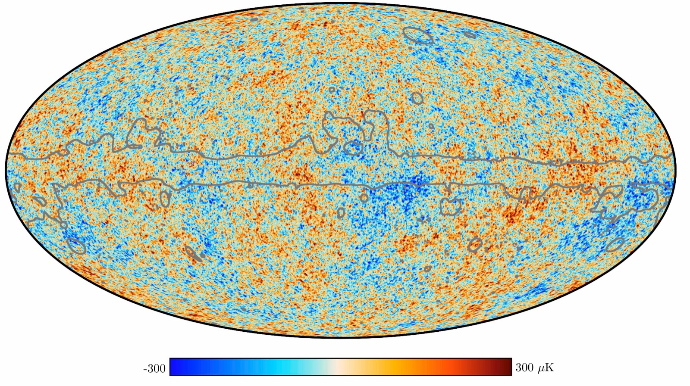
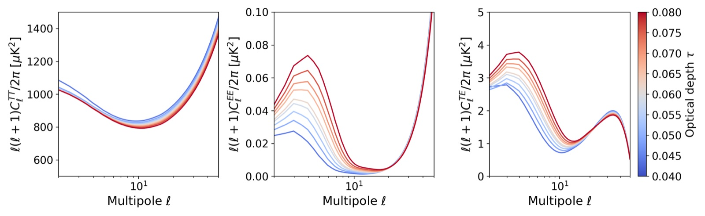
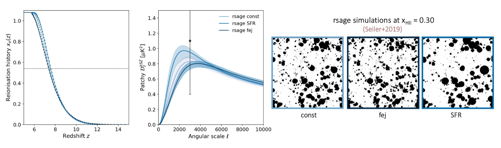
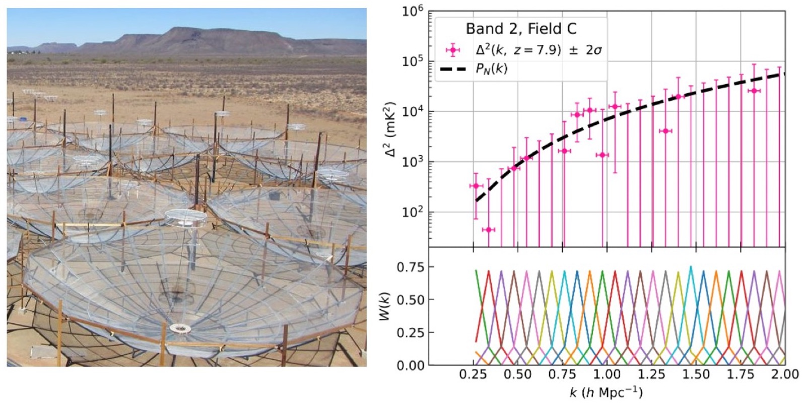

When were the first stars born? What influence did they have on their environment?
To understand the nature and evolution of the first light sources in our Universe, my research focuses on how they ionised the surrounding hydrogen atoms in the intergalactic gas during the Epoch of Reionisation. Unravelling this billion-year-long period is a major challenge of modern cosmology because of the complexity and faintness of the signals involved.
To access the incredibly distant and faint signal coming from this epoch, my research follows the strategy of data combination and cross-correlation. I have published numerous works related to the modelling of reionisation signatures in Cosmic Microwave Background (CMB) observations and to extracting physics from large radio data sets.
To summarise, my research interests include:
- Cosmology with low-frequency interferometers, esp. high-redshift observations (21cm cosmology)
- Retrieving cosmological information from secondary CMB anisotropies (SZ effects)
- Statistical analysis of large astronomical data sets
- Physical modelling of reionisation
You can find my publications here. Most of the codes I develop for my work are available on my GitHub page.
The Cosmic Microwave Background
The CMB radiation, whose temperature fluctuations are observed at microwave frequencies, corresponds to the photons emitted when the primordial electrons and ions recombined to form the first neutral atoms, 380 000 years after the Big Bang. The interaction of CMB photons with the electrons freshly liberated by reionization on their way to us is an important source of information about the EoR.

The Thomson optical depth
Some CMB photons are deflected by Thomson scattering, enhancing the CMB large-scale polarisation fluctuations. This effect is modelled by a sky- and time-averaged optical depth τ, which traces global reionization parameters, such as its duration. The figure below illustrates the impact of the optical depth on the power spectra of the CMB temperature and polarisation fluctuations.

The kinetic Sunyaev-Zel'dovich effect
Other CMB photons gain energy from high-energy reionization electrons via inverse Compton scattering. This Sunyaev-Zel'dovich (SZ) effect is called kinetic (kSZ) or thermal (tSZ), depending on the electrons' energy. In Gorce et al. (2022), we use a machine-learning approach based on the analytical model introduced in Gorce et al. (2020) to achieve the first measurement of the kSZ power spectrum amplitude and shape, effectively constraining the reionization duration and morphology. Our framework enables the first joint analysis of the latest Planck and the state-of-the-art South Pole Telescope (SPT) data.
The emulator used in this work is freely available online at this link.

The 21cm signal from cosmic hydrogen
The most direct observation of reionization is that of the 21 cm line of neutral hydrogen, as its brightness is sensitive to the density and ionisation level of the intergalactic gas. However, systematics, low signal-to-noise, and bright foregrounds prevent its detection, which can only be achieved with an excellent knowledge of the instrument, of the signal, and with dedicated analysis methods.
The 21cm power spectrum with HERA
Only upper limits on the power spectrum of the 21cm signal brightness temperature fluctuations during reionization have been obtained. Many international collaborations, such as those linked to the SKA and its precursor, the Hydrogen Epoch of Reionization Array (HERA), of which I am a member, seek to measure this signal. HERA has recently presented the lowest upper limits to date, allowing for the first time the data to exclude theoretical models of the young Universe. To understand what prevents detection, one needs to know precisely how the true cosmological power spectrum and what is measured by the instrument differ. In Gorce & the HERA collaboration (2022), I quantify the necessity of modelling how instrument characteristics and data analysis choices can change our interpretation of the power spectrum.

The intensity maps measured by the SKA
The Square Kilometre Array (SKA) will map the evolution of the 21 cm signal over time. I have developed several statistical tools to analyse such maps, and demonstrated, by confronting them with numerical simulations, their potential to constrain the nature of the first galaxies, such as their mass and luminosity.
The first is a statistic derived from the simple notion of standard deviation, and thus very fast to compute even for large volumes of data. This tool makes use of an observational bias called the sample variance to our advantage to characterise the morphology of the ionisation field (Gorce et al., 2021) – that is, the shape and size of the ionised bubbles surrounding galaxies. From a single image, divided into patches, it is possible to measure the ionisation rate of the observed sky area, which is impossible to obtain in a traditional analysis.
The second is a third-order statistic, beyond the power spectrum, constructed from the phases of the complex signal measured. By focusing on the phases, one avoids calibration errors and gains access to the non-Gaussianity of the signal, excluded from power spectrum measurements (Gorce & Pritchard, 2019), which contains a wealth of information about the reionisation morphology.